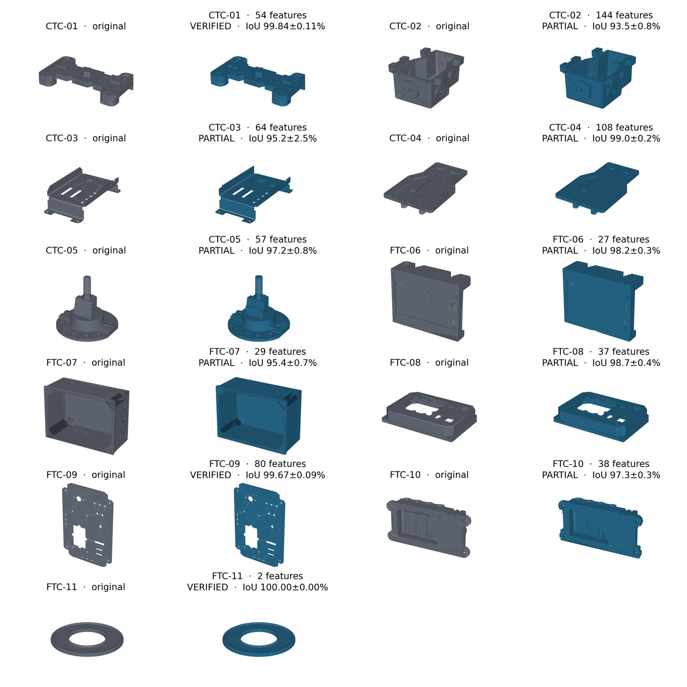

featuretree turns a STEP solid into an editable feature tree for FreeCAD, Onshape or build123d, and checks every recovery by rebuilding it. A tree that rebuilds the part is VERIFIED. One that doesn't is labelled PARTIAL, with the error reported. This post is the scorecard: every distinct part geometry in NIST's MBE PMI test set, with time, complexity, accuracy, and how well the recovered tree matches what the designer actually drew.
The short version: every part now comes back as an editable tree that overlaps the original by at least 93.5%, averaging 97.6%, up from 65%. None was wrongly accepted. The VERIFIED count didn't move: it's still 3 of 11, because the bar also got higher. Our own checks caught our new recogniser accepting two parts it shouldn't have, and we made the bar stricter rather than keep the better-looking number.

Scorecard
NIST doesn't define a score for feature recognition. These test cases exist to check how CAD translators carry tolerances and annotations (PMI). So the criteria below are ours, stated so anyone can re-compute them from the repo:
| Criterion | Result |
|---|---|
| Coverage: distinct NIST test geometries run (CTC-01 to 05, FTC-06 to 11) | 11 / 11 |
| Editable tree returned (none refused, none crashed) | 11 / 11 |
| VERIFIED: volume within 0.5%, size within 0.05 mm, and overlap (IoU) at least 99.5% | 3 / 11 |
| False accepts: VERIFIED but independently measured below 99.5% overlap | 0 |
| Overlap with the input, all parts (mean / worst) | 97.6% / 93.5% (was 65.0% / 7.4%) |
| Parts above 95% / above 99% overlap | 10 / 11 · 4 / 11 |
| Recognition time (median / slowest / whole set) | 152 s / 562 s / 29 min |
| Complexity: B-rep faces in → feature operations out | 2,727 → 431 |
| Dimensioned holes found, vs the designer's PMI | 97 / 196 |
| Standard sizes named correctly (of holes found) | 68 / 74 |
| Unit system (inch vs metric) inferred correctly | 9 / 11 |
Overlap here is intersection over union (IoU) between the original solid and the rebuilt tree. We measure it without CAD Boolean operations, by classifying thousands of sample points against both solids, with the recogniser's own transform undone so the comparison is exact. Booleans turned out to be unreliable on exactly the parts that fail. That story is in the first post.
Every part
| Part | Faces in | Ops out | Time | Overlap before | Overlap now | Verdict | Holes vs PMI |
|---|---|---|---|---|---|---|---|
| CTC-01 | 139 | 39 | 86 s | 99.8% | 99.8% | VERIFIED | 7/7 |
| CTC-02 | 663 | 89 | 562 s | 7.4% | 93.5% | partial | 2/7 |
| CTC-03 | 139 | 33 | 72 s | 36.1% | 95.2% | partial | 0/11 |
| CTC-04 | 517 | 93 | 194 s | 30.8% | 99.0% | partial | 36/41 |
| CTC-05 | 208 | 40 | 58 s | 14.5% | 97.2% | partial | 1/1 |
| FTC-06 | 144 | 18 | 166 s | 59.6% | 98.2% | partial | 0/22 |
| FTC-07 | 269 | 21 | 194 s | 95.5% | 95.4% | partial | 4/27 |
| FTC-08 | 270 | 32 | 152 s | 95.9% | 98.7% | partial | 16/16 |
| FTC-09 | 158 | 40 | 18 s | 99.7% | 99.7% | VERIFIED | 29/30 |
| FTC-10 | 214 | 25 | 241 s | 76.0% | 97.3% | partial | 0/32 |
| FTC-11 | 6 | 1 | 19 s | 100% | 100% | VERIFIED | 2/2 |
"Before" is the published first post. "Ops out" counts the pads, pockets, cuts and revolves in the recovered tree (sketches not counted). Time is recognition only, one part at a time. FTC-11 is a two-feature ring and shouldn't carry much weight.
01 / Slice it, don't guess it
The first version assumed a part is one profile swept along one axis, then carved. That works on machined plates like CTC-01 and FTC-09. It fails on anything built up in levels: a pan with a flange, a housing with bosses at several heights, a bracket bent from sheet. Those came back as fragments, at 7% to 60% overlap.
The new path treats a part as a stack of 2.5D layers. Along each principal axis it takes exact cross-sections. It starts at every flat face perpendicular to the axis, where a step or floor can begin, then splits further wherever the section's shape changes between samples, since a boss merging into a wall often ends on a curve with no flat face to mark it. Layers that look the same merge. Each layer becomes one sketch and one pad, drafted if its slices taper, and holes are linked through the layers and cut once. That's the whole change behind the "overlap now" column: CTC-05 went from 14.5% to 97.2%, and CTC-04 from 30.8% to 99.0%.
02 / Our checks caught our own recogniser
The first run with layered recognition looked great: 7 of 11 VERIFIED. It was wrong. At the time, VERIFIED meant the rebuilt tree matched the original on volume and on size. More candidates per part means more chances for errors to cancel: material missing in one place and extra in another can add up to the right volume. Measured independently, two of those seven overlapped their originals by only 95.0% (CTC-03) and 93.7% (FTC-07). Two more fell just short.
We'd predicted this failure in our own preprint and recommended an overlap test as the fix, but hadn't shipped it. Now VERIFIED also needs 99.5% overlap, measured without Booleans on every candidate. The count went back to 3, with no false accepts. We'd rather publish 3 we can defend than 7 we can't.
03 / Defects our checks found
| Defect | Found by | Effect before the fix |
|---|---|---|
| Volume and size can agree while the shape is wrong | independent overlap measurement | 2 parts wrongly VERIFIED (95.0%, 93.7%) |
| A layer whose section wouldn't close was silently dropped, and everything above it sank | size check | CTC-02 17.27 mm short, no warning |
| When nothing verified, the closest-volume candidate was returned, not the best-overlapping one | overlap measurement | FTC-08 at 93.5% instead of 98.7% |
| Separate regions in one layer were stacked on top of each other | rebuild + render review | FTC-07's floor 2.5 mm up and out of the part |
| Hole cuts placed in the rotated working frame | rebuild + render review | holes 115 mm outside FTC-07 |
| Hole outline taken from the smallest slice, which was a fillet | volume check | FTC-08 under-cut 1.15 mm per side |
| Geometry kernel crash during recognition took the whole part with it | corpus run | CTC-02 "no output" |
| Wire length re-measured on every point sample | profiler | 180 s of a 183 s run |
| Wrong trees published: 0 | ||
Each of these is now a test or a standing check in the harness, so the next recogniser change has to pass them.
04 / Design intent, scored against the designer
A tree that rebuilds the part still reads like a machine wrote it. Holes are arcs inside generic cuts, and every size is a bare float. featuretree re-expresses it the way a designer would: holes, bolt circles and rows, the unit system, and the standard drill each diameter most likely is. NIST's AP242 files carry the designer's own dimensions, tolerances and datums, so this can be scored, not just demonstrated.
On the three VERIFIED parts it finds 38 of 39 dimensioned holes and names all 36 sizes the way the drawing does. A 3.969 mm hole comes back as a 5/32" drill where the drawing says .156. Across all eleven parts it finds 97 of 196 holes, and PARTIAL trees can still carry intent: all 16 of FTC-08's holes and 36 of CTC-04's 41. It misses every hole on FTC-06, FTC-10 and CTC-03, where the holes are threaded, chamfered or split across layers and don't slice as clean circles. It gets the unit system wrong on two metric parts whose overall dimensions happen to land on an inch grid.
What's still hard: CTC-02
CTC-02 is a cast housing, and the tool was built around machined parts. It has 663 faces, against 139 for CTC-01, including 158 cones (drafted walls and bosses, so it releases from a mould) and 58 freeform or spherical blends. A stack of layers along one axis approximates it rather than representing it. The drafts become a staircase (visible in the render), the side bosses become layer outlines instead of features on their own axis, and 1,369 section curves are approximated by arcs. It reaches 93.5% overlap and takes over 9 minutes. Next up:
- recognise side features on their own axis
- fit draft wall by wall
- recover blends as fillets instead of slicing through them
Who did what
This was iterative, not one-shot. We steered the heuristics with Claude over many rounds, pushing on performance, correctness and generality. Claude wrote and debugged the code and ran the evaluation. Once the heuristics exist, recovery is hands-off: a STEP file goes in, a feature tree and a verdict come out.
The scorecard is generated by paper/figures/results_report.py from the persisted recovered trees, so every number here can be re-derived from the repo at commit 270e60d.
Everything is open in punkfab/featuretree. Got a STEP file that should be an editable model? Start a project →